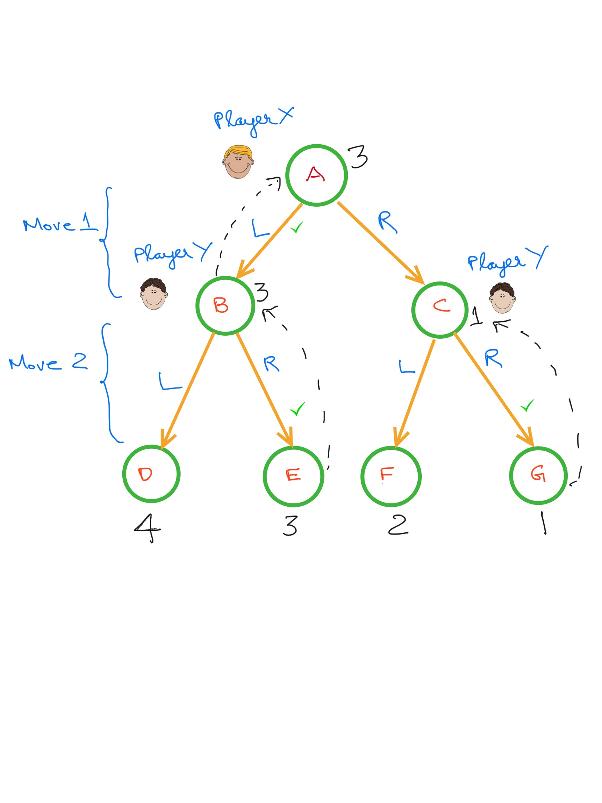
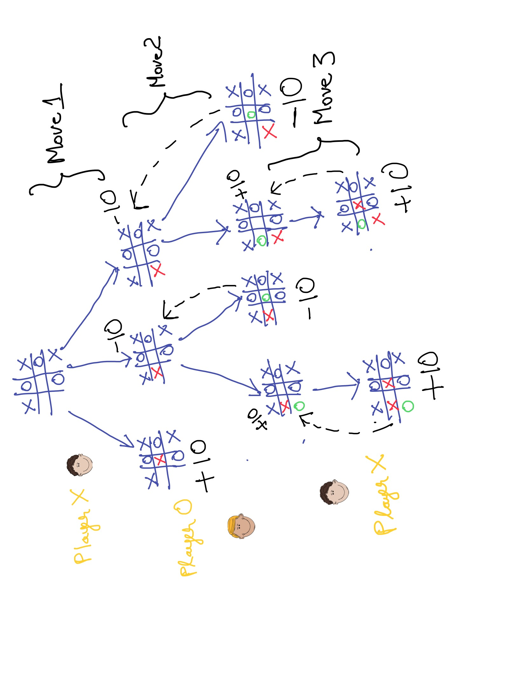
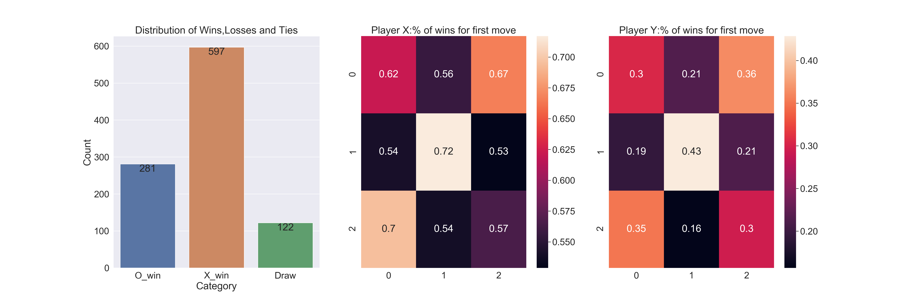
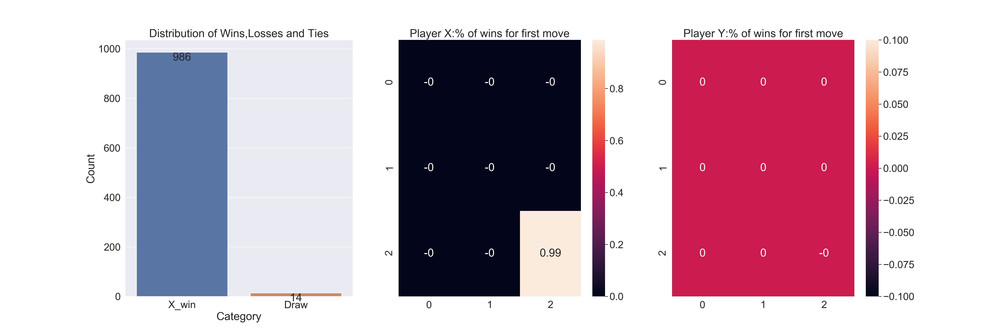
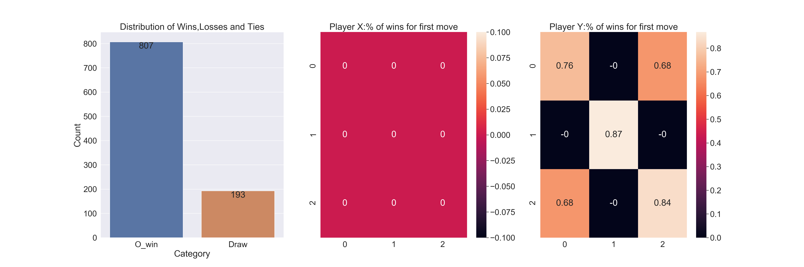
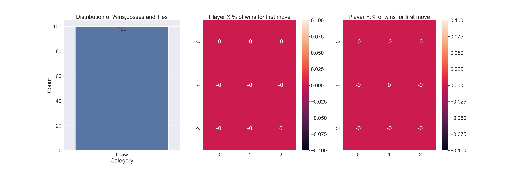

Introduction
I love Tic-Tac-Toe. Besides bringing back fond childhood memories, it offers a simple playground for a noob like me to learn more about Computer Science, Algorithms and AI. In this blog post , I will use the Mini-Max algorithm to solve the game of Tic Tac Toe.
To solve the game means, we will be able to discover a strategy that ties the game against an optimal opponent and wins against any non-optimal opponent.
The Game
If you are from Mars, and do not know how the game works, here are the rules courtesy of Wikipedia
“Tic-tac-toe (American English), noughts and crosses (Commonwealth English and British English), or Xs and Os/“X’y O’sies” (Ireland), is a paper-and-pencil game for two players, X and O, who take turns marking the spaces in a 3×3 grid. The player who succeeds in placing three of their marks in a diagonal, horizontal, or vertical row is the winner. ”
The Minimax Algorithm
There are already plenty of great resources to learn about the minimax algorithm like this one which I will liberally borrow from. I only briefly explain the algorithm here.
The Mini-Max algorithm is perfect for 2-player (X vs Y) games like Tic-Tac-Toe where player X is trying to maximize his chances of winning while player Y is trying to minimize X’s chances of winning.
Consider a small imaginary game where each player can make one of two moves (Left or Right). Player X moves first followed by player Y at which point the score of the game is known.

The score of the game ranges from 1-4. Player X wants to maximize this score while player Y tries to minimize it.To determine what is the optimal action player X should take , we should work backward from the end of the game.
A,B,C,D,E,F and G are various states of the game where the latter 4 are terminal states.
Move 2
When making Move 2, Player Y can be in states B or C.
In State B, Player Y can choose L to yield a score of 4 or R to yield score of E. Given, he wants to minimize the overall score , he will choose R.
Similarly in State C, Player Y will choose R to minimize overall score.
The value of States B and C are now 3 and 1 respectively.
Move 1
For the first move, Player X is in state A. He can choose L which lands him in state B with a score of 3 or choose R which lands him in state C with a score of 1.
Given he wants to maximize the score, he chooses L.
Algorithm
This suggests an algorithm to choose the optimal move from any given state for a maximizing player.
At any given state, enumerate the possible child states. Now determine the value of these child states by invoking the minimizing player i.e. Ask the minimizing player what he would do in each of these states and return the value he gets. Choose the action that leads to the highest value state. This is implemented in the maximize function below.
Similarly for for a minimizing player, enumerate the child states and determine the value of each state by invoking the maximizing player. Choose the action that leads to the lowest value state. This is implemented in the minimize function below.
If at any stage, the child state is a terminal state, the value of the terminal state is simply returned.
Let us use code to solve the simple toy problem above.
import numpy as np
children = {'a':['b','c'],'b':['d','e'],'c':['f','g']} #mapping from state to child states
value = {'d':4,'e':3,'f':2,'g':1} # value of terminal states
action = {'d':'L','e':'R','f':'L','g':'R','b':'L','c':'R'} # mapping from state to the action that produces #that stateWe will also keep a cache of the optimal next state for both maximizing and minimizing players, to make the computation a little faster. This hardly matters for this toy problem but can help for larger problems.
max_optimal_next_states = {}
min_optimal_next_states = {}We define three functions defined below to implement the algorithm.
def produce_children(state):
"Function to produce children of a state"
return children.get(state,None)
def is_terminal(state):
"Function to check if a state is terminal and return value of the state"
if state in children:
return False,0
return True,value[state]
def get_action(next_state,current_state=None):
"Function to return action that moves player from current state to next state"
#current state is redundant for this example as there is only one way to get to a state
return action[next_state]Now we define the key maximizing and minimizing functions that implements the core logic of the algorithm.
import random
def maximize(state):
if state in max_optimal_next_states:
return max_optimal_next_states[state]
terminal_status,reward = is_terminal(state)
if terminal_status:
return state,reward # No further state so return same state
max_state, max_score = None,-np.Inf
max_states = []
children = produce_children(state)
for child in children:
_,score = minimize(child)
if score > max_score:
max_state,max_score = child,score
max_states = [max_state]
elif score == max_score:
max_states.append(child)
# If multiple actions are optimal, break ties randomly
max_state = random.choice(max_states)
max_optimal_next_states[state] = (max_state,max_score)
return max_state,max_scoredef minimize(state):
if state in min_optimal_next_states:
return min_optimal_next_states[state]
terminal_status,reward = is_terminal(state)
if terminal_status:
return state,reward # No further state so return same state
min_state, min_score = None,np.Inf
min_states = []
children = produce_children(state)
for child in children:
_,score = maximize(child)
if score < min_score:
min_state,min_score = child,score
min_states = [min_state]
elif score == min_score:
min_states.append(child)
min_state = random.choice(min_states)
min_optimal_next_states[state] = (min_state,min_score)
return min_state,min_score
def optimal_decision(state,player = 'Maximizer'):
if player == 'Maximizer':
max_state,_ = maximize(state)
return get_action(max_state,state)
else:
min_state,_ = minimize(state)
return get_action(min_state,state)Let us confirm this returns the expected decisions in the image above.
optimal_decision('a',player = 'Maximizer')## 'L'optimal_decision('b',player = 'Minimizer')## 'R'optimal_decision('c',player = 'Minimizer')## 'R'Now what if the roles were reverse with Player X being a minimizer and Player Y being a maximizer. We expect the decisions to flip.
optimal_decision('a',player = 'Minimizer')## 'R'optimal_decision('b',player = 'Maximizer')## 'L'optimal_decision('c',player = 'Maximizer')## 'L'Minimax in Limited Tic Tac Toe
The toy problem above can be easily mapped to a limited tic-tac-toe game as shown in the image below.

Here, of the three possible moves available to player X in the starting state, the move to place ‘X’ in the center square is the only action that leads to a winning outcome. This can be figured out by recursively applying the minimax algorithm as illustrated above.
Note that Player X makes Move 1, Player Y makes Move 2 and Player X makes Move 3. This mini-game can end as early as after Move 1.
Solving TicTacToe with Minimax
Let us denote player ‘X’ who plays first using 1 and player ‘O’ who plays second using 2. An empty square will be represented with 0.
s_to_b = {0:'__',1:'X',2:'O'} We will denote the state of a game using a tuple of length 9.For example:
state = (1,0,0,2,0,0,0,0,0)The state can be converted to a board using the below function.
def state_to_board(state):
"Function to convert a a state(tuple) to a board(numpy array)"
board = np.array([s_to_b[position] for position in state])
return board.reshape(3,3)
state_to_board((1,0,0,2,0,0,0,0,0))## array([['X', '__', '__'],
## ['O', '__', '__'],
## ['__', '__', '__']], dtype='<U2')A player wins if he or she gets a sequence of 3 ’X’s or 3 ’O’s.
max_player_wins = (1,1,1)
min_player_wins = (2,2,2)Now all we have to do is redefine the functions is_terminal , produce_children and get_action for the new tic-tac-toe problem
A terminal state is reached if one of the players wins or if the board is fully occupied in which case the game is tied.
We will set the score of the game as follows:
X wins: + 10
O wins: -10
Draw: 0
def is_terminal(state):
if state[slice(0,3)] == max_player_wins:
return True,10
elif state[slice(0,3)] == min_player_wins:
return True,-10
elif state[slice(3,6)] == max_player_wins:
return True,10
elif state[slice(3,6)] == min_player_wins:
return True,-10
elif state[slice(6,9)] == max_player_wins:
return True,10
elif state[slice(6,9)] == min_player_wins:
return True,-10
elif state[slice(0,7,3)] == max_player_wins:
return True,10
elif state[slice(0,7,3)] == min_player_wins:
return True,-10
elif state[slice(1,8,3)] == max_player_wins:
return True,10
elif state[slice(1,8,3)] == min_player_wins:
return True,-10
elif state[slice(2,9,3)] == max_player_wins:
return True,10
elif state[slice(2,9,3)] == min_player_wins:
return True,-10
elif state[slice(0,9,4)] == max_player_wins:
return True,10
elif state[slice(0,9,4)] == min_player_wins:
return True,-10
elif state[slice(2,7,2)] == max_player_wins:
return True,10
elif state[slice(2,7,2)] == min_player_wins:
return True,-10
elif state.count(0) == 0:
return True,0
else:
return False,0
from copy import deepcopy
def produce_children(state):
l = list(state)
children = []
vacant_slots = [i for i,v in enumerate(state) if v == 0]
if state.count(0) % 2 == 1: #If number of vacant spaces is odd , then it is max_player's turn
for slot in vacant_slots:
child = deepcopy(l)
child[slot] = 1
children.append(tuple(child))
else: #if number of vacant spaces is even then it is min_player's turn.
for slot in vacant_slots:
child = deepcopy(l)
child[slot] = 2
children.append(tuple(child))
return childrenchildren = produce_children(state)
children## [(1, 1, 0, 2, 0, 0, 0, 0, 0), (1, 0, 1, 2, 0, 0, 0, 0, 0), (1, 0, 0, 2, 1, 0, 0, 0, 0), (1, 0, 0, 2, 0, 1, 0, 0, 0), (1, 0, 0, 2, 0, 0, 1, 0, 0), (1, 0, 0, 2, 0, 0, 0, 1, 0), (1, 0, 0, 2, 0, 0, 0, 0, 1)]These correspond to the following states.
for child in children:
print(state_to_board(child),'\n')## [['X' 'X' '__']
## ['O' '__' '__']
## ['__' '__' '__']]
##
## [['X' '__' 'X']
## ['O' '__' '__']
## ['__' '__' '__']]
##
## [['X' '__' '__']
## ['O' 'X' '__']
## ['__' '__' '__']]
##
## [['X' '__' '__']
## ['O' '__' 'X']
## ['__' '__' '__']]
##
## [['X' '__' '__']
## ['O' '__' '__']
## ['X' '__' '__']]
##
## [['X' '__' '__']
## ['O' '__' '__']
## ['__' 'X' '__']]
##
## [['X' '__' '__']
## ['O' '__' '__']
## ['__' '__' 'X']]Finally we define a function to return the action that leads from the current state to the next state.
def difference(tuple1,tuple2):
"Helper function to get the index where first difference between two tuples is observed"
assert len(tuple1) == len(tuple2)
for i,value in enumerate(tuple1):
if value != tuple2[i]:
return i
return None
def get_action(next_state,current_state):
"Function to return action that moves player from current state to next state"
return difference(next_state,current_state),next_state
We can now evaluate whether we can solve the mini tic-tac-toe problem above with the tools at hand.The starting state of the game is given by
state = (1,2,1,0,0,2,0,2,1)
state_to_board(state)## array([['X', 'O', 'X'],
## ['__', '__', 'O'],
## ['__', 'O', 'X']], dtype='<U2')optimal_action,optimal_next_state = optimal_decision(state,player = 'Maximizer')
optimal_action,state_to_board(optimal_next_state)## (4, array([['X', 'O', 'X'],
## ['__', 'X', 'O'],
## ['__', 'O', 'X']], dtype='<U2'))As expected , the algorithm determines the optimal action for player ‘X’ is to occupy the central square in the board.
Let us consider one more path in the game where player X plays a non-optimal move resulting in the following state.
state = (1,2,1,1,0,2,0,2,1)
state_to_board(state)## array([['X', 'O', 'X'],
## ['X', '__', 'O'],
## ['__', 'O', 'X']], dtype='<U2')The optimal state of the minimizing player is given by
optimal_action,optimal_next_state = optimal_decision(state,player = 'Minimizer')
optimal_action,state_to_board(optimal_next_state)## (4, array([['X', 'O', 'X'],
## ['X', 'O', 'O'],
## ['__', 'O', 'X']], dtype='<U2'))The minimizing player also picks the optimal action as expected.
Putting it all together
Now we will analyze the following games
- Random X vs Random O
- Optimal X vs Random O
- Random X vs Optimal O
- Optimal X vs Optimal O
The following function represents a random player who chooses an available slot at random. The maximizer is player X while the minimizer is player O
import random
def random_decision(state,player = 'Maximizer'):
vacant_slots = [i for i,v in enumerate(state) if v == 0]
action = random.choice(vacant_slots)
state_as_list = list(state)
#Update state
if player == 'Maximizer':
state_as_list[action] = 1
else:
state_as_list[action] = 2
return action,tuple(state_as_list)
Now we will define a function to play N games and record the results for analysis
from collections import defaultdict
from tqdm import tqdmdef play_games(n_games:int,X_strategy,O_strategy):
'''
n_games: Number of games to be player
X_strategy: function describing decision making strategy for player X
O_strategy: function describing decision making strategy for player Y
'''
win_stats = defaultdict(int)
#Dictionary for holding no of wins for games started with a particular move
move_wins_X = defaultdict(int)
move_wins_O = defaultdict(int)
#Dictionary for holding no of games started with a particular move
move_X = defaultdict(lambda:-1)
move_O = defaultdict(lambda:-1)
for i in tqdm(range(n_games)):
random.seed(i)
state = (0,0,0,0,0,0,0,0,0)
terminal_status = False
first_move_flag_X = True # Flag identifying first move of player X
first_move_flag_O = True # Flag identifying first move of player O
while not terminal_status:
#Player X plays;
player_x_action,next_state = X_strategy(state,player='Maximizer')
terminal_status,score = is_terminal(next_state)
if first_move_flag_X:
first_move_X = player_x_action
move_X[first_move_X] += 1
first_move_flag_X = False
#If player X plays last move
if terminal_status:
if score == 10: #player X wins
win_stats['X_win'] +=1
move_wins_X[first_move_X] += 1 #record player's first move
else:
win_stats['Draw'] += 1
break
state = next_state
#Player O plays next
player_o_action,next_state = O_strategy(state,player='Minimizer')
terminal_status,score = is_terminal(next_state)
if first_move_flag_O:
first_move_O = player_o_action
move_O[first_move_O] += 1
first_move_flag_O = False
#If player O plays last move
if terminal_status:
if score == -10: #player O wins
win_stats['O_win'] +=1
move_wins_O[first_move_O] += 1 #record player's first move
else:
win_stats['Draw'] += 1
break
state = next_state
return win_stats,move_wins_X,move_wins_O,move_X,move_O
We also create a helper function to visualize the results.
import seaborn as sns
import matplotlib.pyplot as plt
import pandas as pd
def plot_results(results):
win_stats,move_wins_X,move_wins_O,move_X,move_O = results
win_stats_df = pd.DataFrame({'Category':list(win_stats.keys()),'Count':list(win_stats.values())})
move_X_win_rate = {i:move_wins_X[i]/move_X[i] for i in range(9)}
move_O_win_rate = {i:move_wins_O[i]/move_O[i] for i in range(9)}
move_X_win_rate_array = np.array([move_X_win_rate[x] for x in range(9)]).reshape(3,3)
move_O_win_rate_array = np.array([move_O_win_rate[x] for x in range(9)]).reshape(3,3)
sns.set(font_scale=2)
fig, axs = plt.subplots(ncols=3,figsize=(30,10))
splot = sns.barplot(x="Category",y="Count",data=win_stats_df,ax=axs[0])
for p in splot.patches:
splot.annotate(format(p.get_height(), '.0f'),
(p.get_x() + p.get_width() / 2., p.get_height()),
ha = 'center', va = 'center',
xytext = (0, -12),
textcoords = 'offset points')
splot.set_title('Distribution of Wins,Losses and Ties')
sns.heatmap(move_X_win_rate_array,annot=True,ax = axs[1]).set_title('Player X:% of wins for first move')
sns.heatmap(move_O_win_rate_array,annot=True,ax = axs[2]).set_title('Player Y:% of wins for first move')
plt.show()
Random X vs Random O
results1 = play_games(1000,X_strategy=random_decision,O_strategy=random_decision)##
0%| | 0/1000 [00:00<?, ?it/s]
100%|##########| 1000/1000 [00:00<00:00, 20874.97it/s]When both players follow a random strategy, player X has a first mover advantage and wins the majority of the games.
plot_results(results1)
We also see that given both players use random strategies: player X can play the first move in any of the squares without it affecting the win rate significantly.
For player O on the other hand, playing the first move in the center or corner square results in a significantly higher win rate.
Optimal X vs Random O
results2 = play_games(1000,X_strategy=optimal_decision,O_strategy=random_decision)##
0%| | 0/1000 [00:00<?, ?it/s]
0%| | 1/1000 [00:00<02:18, 7.21it/s]
100%|##########| 1000/1000 [00:00<00:00, 5633.05it/s]plot_results(results2)
When player X uses the optimal minimax strategy,it wins almost all the games.
It consistently picks the bottom right hand corner in the first move in every game.
Random X vs Optimal O
results3 = play_games(1000,X_strategy=random_decision,O_strategy=optimal_decision)##
0%| | 0/1000 [00:00<?, ?it/s]
100%|##########| 1000/1000 [00:00<00:00, 22279.67it/s]plot_results(results3) In this case, O has a lower win rate given it does not have a fist mover advantage.
The win rate is highest when Player O gets to occupy the central square in the first move.
Optimal X vs Optimal O
results4 = play_games(100,X_strategy=optimal_decision,O_strategy=optimal_decision)##
0%| | 0/100 [00:00<?, ?it/s]
100%|##########| 100/100 [00:00<00:00, 20218.39it/s]plot_results(results4)
When both players play the optimal strategy, all games end in ties.
You can find the jupyter notebook for the blog post here